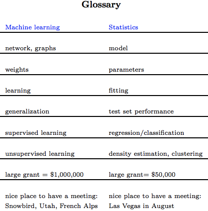

The difference between statistics and machine learning is small, according to Brieman (2001), one assumes that the data are generated by a given stochastic data model. The other uses algorithmic models and treats the data mechanism as unknown, they are also very similar where they both share similar terminologies. Tibshiriani (2009) compares both statistics and machine learning in an amusing way with the following table:

Despite similarities, statistics has become very unpopular in recent years due to its misuse in media. A quote sums up the perception of statistics quiet well:
There are three degrees of falsehood: the first is a fib, the second is a lie, and then come statistics
Brieman (2001) notes the way data models are used currently may have more damaging results compared to a simple linear regression, especially those publications that claim a model with 5% level of significance are enough to deemed acceptable. This has led to the distrust in statistics and its findings, this is not to say there is no place for statistics, however, one should use it with caution and reservation. While there are many instances where machine learning may prove to be more suitable than statistics (e.g. speech recognition, computer vision, and many others), one should not blindly use machine learning tech- niques to find patterns within data without full consideration to the problem at hand.
Currently it is still very difficult to compare the results of statistical and machine learning techniques honestly, one may find biased examples to support one over the other, additionally simpler methods are easier to criticize than more complicated methods, this does not necessarily mean statistics is at a disadvantage, it does however infer machine learning techniques are perhaps too complex to validate and criticize.
The choice remains difficult in choosing either. While both can be used for anlysis, which one should be chosen? Which data model produced should be chosen if they disagree with each other? The answer is, it depends. For modelling complex behaviours, machine learning techniques is perhaps more suitable, however if a simple regression conveys the same information a neural net does, then regression should be used. These questions of which model should be used can be validated through testing, and its practicality (e.g. training a complex neural network versus regression, when both have similar predictive power), however we believe it is ultimately down to the analysts decision.
To conclude, we should remain open minded in regards to both statistics and machine learning techniques, a comparison of the findings in both will be made to aid us in choosing which analysis is more suitable, and which model is best for our needs.
Breiman, L., (2001). Statistical Modeling: The Two Cultures. Statistical Science, 16(3), p.199-231.
Tibshiriani, R. (2009). Glossary. Available at < http://www- stat.stanford.edu/ tibs/stat315a/glossary.pdf >